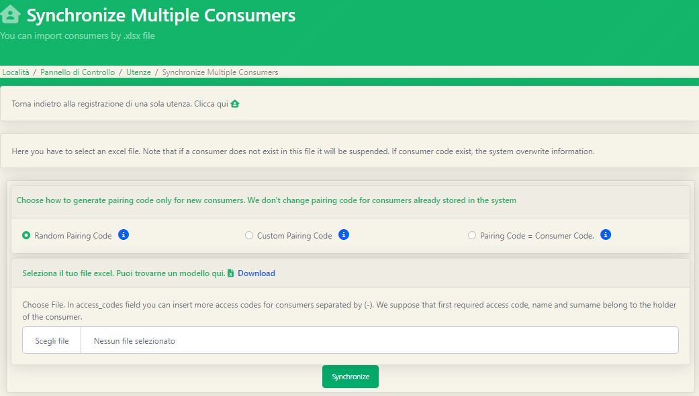
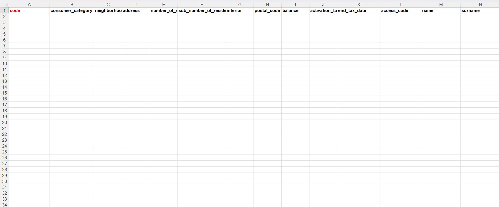

Il caricamento massivo delle utenze non è l'unica operazione che può essere svolta in maniera massiva sulle utenze. Nella parte superiore della schermata delle utenze precedentemente vista potremmo notare altri tasti di azione: I primi due tasti sono stati già visti all'interno della sezione Caricamento Manuale delle Utenze, procediamo quindi in ordine con gli altri tre.
La sincronizzazione con Excel è molto utile nei casi in cui vadano effettuati aggiornamenti sull'anagrafica in maniera massiva. La sincronizzazione prende in input lo stesso file excel utilizzato per il caricamento massivo; la stessa impostazione della pagina risulta praticamente uguale a quella del caricamento massivo delle utenze. 
Preso in ingresso il nuovo file caricato, la sincronizzazione svolge un'operazione di confronto tra il file appena caricato e l'attuale database in uso, comportandosi nel seguente modo:
Il nome della funzione risulta piuttosto esplicativo dell'azione che verrà eseguita. In questo caso il file excel che utilizzeremo prenderà in ingresso una sola colonna significativa: il codice utenza.
L'ultima funzione massiva della pagina utenze risulta utile qualora ci fossero da inserire massivamente o aggiornare informazioni personali dell'anagrafica come nomi, cognomi o indirizzi. Il file excel che prenderà in ingresso tale funzione conterrà una sola colonna obbligatoria, quella del codice utenze; tutte le altre colonne saranno opzionali e modificabili.  Terminata la compilazione del file basterà caricarlo come visto per le altre funzioni; anche al termine di questa operazione riceveremo una notifica via mail di successo o di presenza di errori.